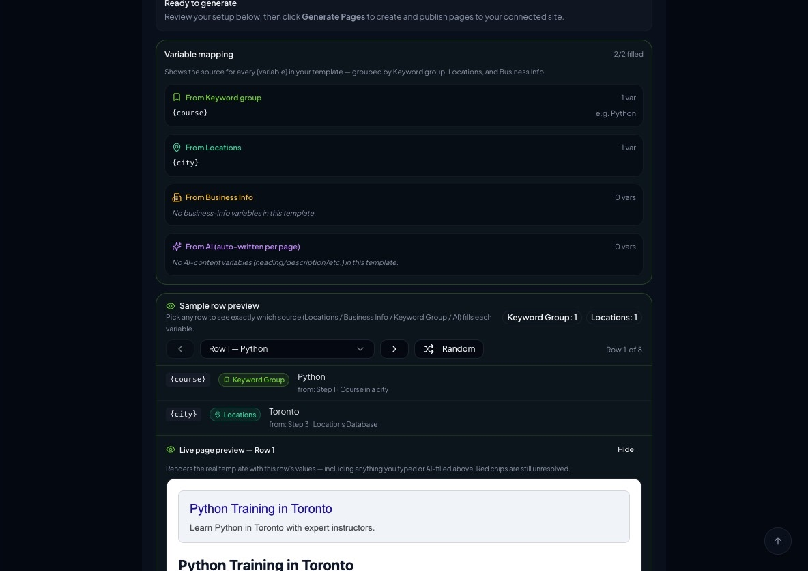
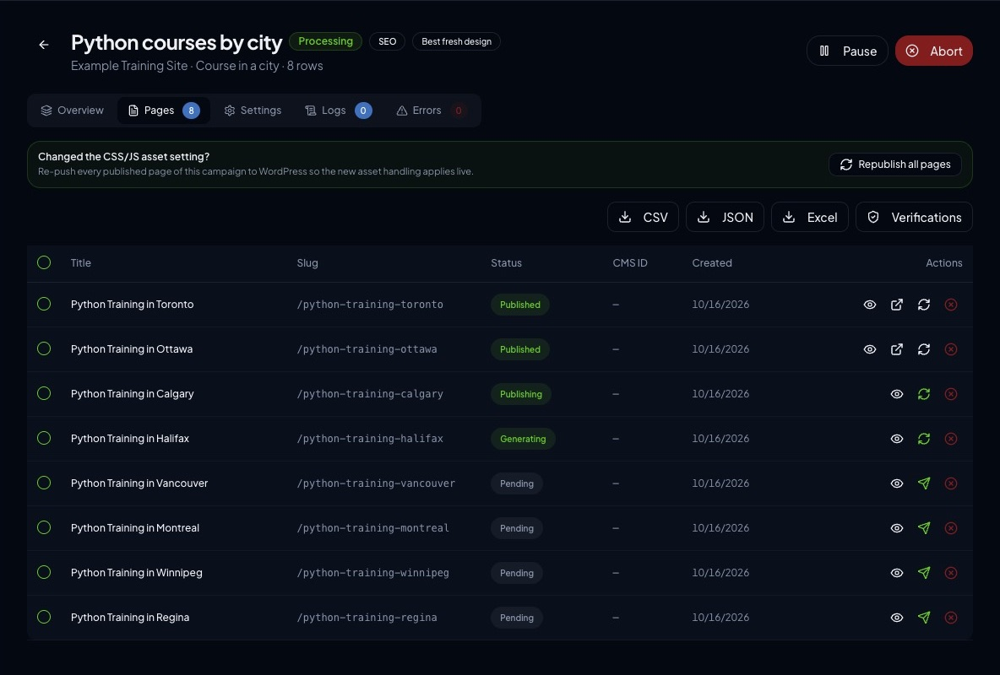

Case study · SaaS platforms
Programmatic SEO page generation SaaS
A multi-workspace SaaS that turns CSV data and templates into SEO-checked pages and publishes to WordPress, Shopify, WooCommerce and PrestaShop.
At a glance
- Who it's for
- SEO agencies, marketers and site owners who need to publish many location- or keyword-based pages.
- Core stack
- React, TypeScript, Supabase, Stripe
- What sets it apart
- One pipeline from spreadsheet rows to verified, SEO-scored pages live on the customer's own CMS, across several e-commerce and CMS platforms.
What it looks like in use
Setting up a campaign from a spreadsheet, then watching the pages move through to the customer's website.
Python courses by cityProcessing
Campaign setup
TemplateCourse in a city
Data sourcesKeyword group, locations list
Keyword group fills{course}
Locations fills{city}
Title pattern{course} Training in {city}
Page address/python-training-{city}
WebsiteWordPress connected
Generate pages
Pages from this campaign
Python Training in TorontoPublished
Python Training in OttawaPublished
Python Training in CalgaryPublishing
Python Training in HalifaxGenerating
Four more pagesPending
Page preview
Python Training in Toronto
Learn Python in Toronto with expert instructors.SEO checked
Real screens from the working product (sample data)


From a spreadsheet to live pages
-
Maya uploads a spreadsheet
Each row holds the details for one page, such as a course and a city.
-
She chooses a page layout
She picks a template and matches each gap in the page, such as the city name, to a spreadsheet column, a keyword group or a locations list.
-
One page is written for every row
The system fills in the template for each row, so every page has its own title, text and web address.
-
Each page gets a quality check
Titles and page details are checked for search engines before anything is published.
-
The pages go live on the site she manages
The finished pages are sent straight to her WordPress or shop site, with the result shown for each one.
The challenge
Publishing hundreds of near-identical landing pages, one per city, product or keyword, is slow and error-prone when done by hand in a CMS.
Copy has to be unique enough to avoid duplicate-content problems, and each page needs correct metadata and structured data. Every target platform, from WordPress to Shopify, also has its own publishing API and page-builder format. The original brief asked for a SaaS where a user uploads a CSV, maps columns to template variables, generates one page per row and pushes them to a connected website. It also called for usage-based subscription plans and an admin panel for the platform owner.
The solution
The platform is a React single-page dashboard backed by Supabase: Postgres, authentication and a large set of edge functions. Users create campaigns that combine a template, a CSV or keyword group and a connected website.
A generation engine fills the variables, optionally enriches copy with AI, scores SEO quality and publishes through platform-specific connectors. The codebase has since grown into a broader suite: a template marketplace, an AI site builder, SEO audit and indexing tools, scheduled runs, workspaces with members and a companion WordPress plugin.
For your technical teamhow it works under the hood
Campaign and page lifecycle
Key features
What the system does, as built in the codebase.
- 01
Campaign wizard with CSV mapping
Upload data, map columns to template variables, pick a site and generate pages in bulk.
- 02
Multi-platform publishing
Connectors for WordPress, Shopify, WooCommerce and PrestaShop, plus an Elementor page-builder engine and a Gutenberg engine.
- 03
AI content and SEO tooling
AI row generation, content rewriting, translation, SEO optimisation and an analysis engine with analyzers and auto-fixers.
- 04
Template marketplace and kits
Browsable layout templates, with template scanning and validation.
- 05
Scheduled, reversible publishing
Queued campaigns run on a schedule, and published pages can be rolled back.
- 06
Indexing and internal linking
Search-engine ping and indexing submission, plus automatic internal-link building.
- 07
Subscriptions, credits and invoicing
Plan checkout, a customer portal, usage entitlements, AI credits and PDF invoices.
- 08
Admin panel and referral programme
Owner-facing user, payment and website management, with affiliate and referral pages.
How it fits together
From a spreadsheet row to a verified page on the customer's site.
- CSV and keyword dataupload, mapping, keyword groups
- Template enginevariable fill, section variants, AI enrichment
- SEO engineanalyzers, fixers, quality score
- Connector layerWordPress, Shopify, WooCommerce, PrestaShop
- Target websitepages published and verified
- Supabase backendPostgres with RLS, auth, edge functions
- A scheduled runner picks up queued campaigns.
- Billing webhooks update plan entitlements that gate generation.
Implementation notes
Engineering decisions worth knowing about.
Workspace multi-tenancy
Workspaces have owner, admin and member roles, with row-level security on most tables.
Column-level grant hardening
Secrets such as site credentials, payment IDs and webhook secrets are readable only by the service role. A regression script runs in CI to guard this.
Encrypted third-party tokens
Tokens are encrypted at rest with AES-GCM in a shared edge-function module.
Connector abstraction
Each target platform implements a common interface, with theme adapters and asset import. New platforms plug into one factory.
Page-builder fidelity tests
Fixtures, publish-verify and regression suites cover the Elementor engine and run in a dedicated workflow.
Internationalisation
Roughly thirty locale files, build-time validation scripts and an in-app auto-translate provider.
Email queue and webhooks
A transactional email queue handles suppression and unsubscribes, and Stripe webhooks are processed server-side.
Static prerender and sitemap
Prerendering and sitemap generation run at build time, and the app deploys as a single-page app with rewrites.
Technology stack
Taken from the project's dependency and config files.
- Frontend
- React 18
- TypeScript
- Vite
- Tailwind CSS
- shadcn/Radix UI
- TanStack Query
- React Router
- Recharts
- Framer Motion
- Backend
- Supabase
- PostgreSQL
- Supabase Auth
- Deno edge functions
- AI
- OpenAI SDK
- Multi-provider AI service module
- Payments
- Stripe
- Integrations
- WordPress REST API
- Companion WordPress plugin
- Shopify Admin API
- WooCommerce
- PrestaShop
- Elementor
- Google indexing
- IndexNow
- Quality
- Vitest
- Playwright
- ESLint with a custom i18n plugin
- GitHub Actions
- Marketing assets
- Remotion
For your technical teamtechnology layers
Technology layers
Business value
What the system enables. No numbers are claimed.
- Lets a small team publish large batches of location or keyword pages without manual CMS entry.
- Supports the Elementor and Gutenberg page builders and theme adapters, so generated pages fit the target site.
- Gives agencies a single workspace to manage several client sites and team members.
- Turns usage into plan tiers, credits and invoices without manual billing work.
Need a system like this built?
Tell us what it needs to do and we will scope it with you on a call.